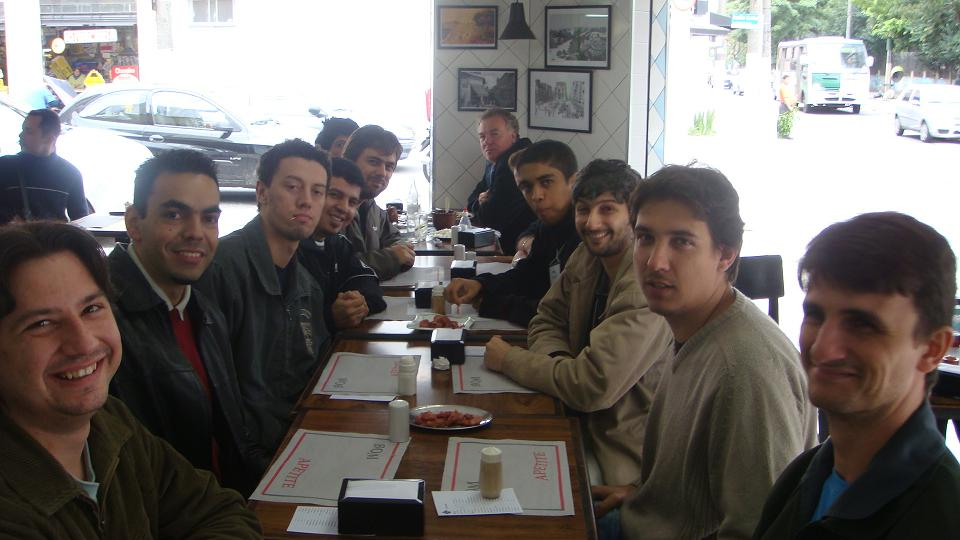
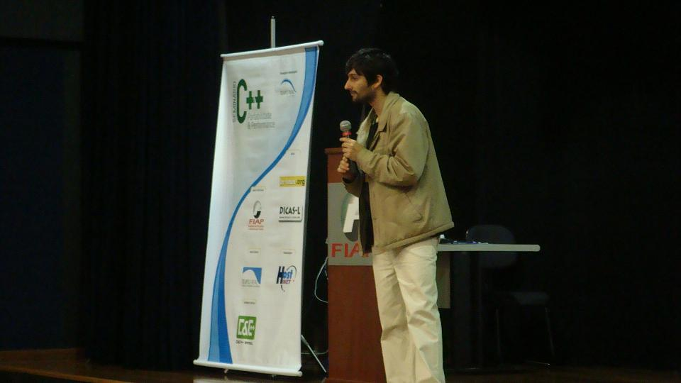
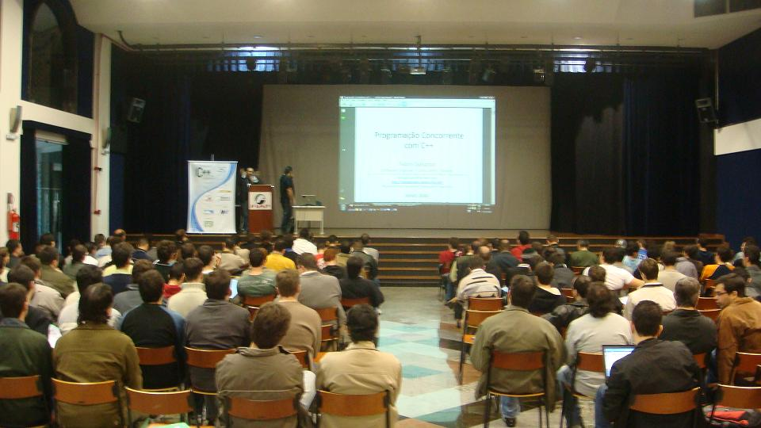
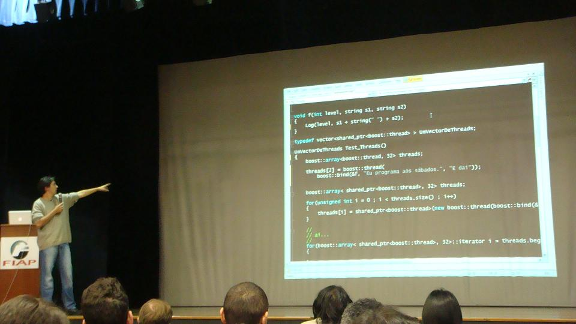
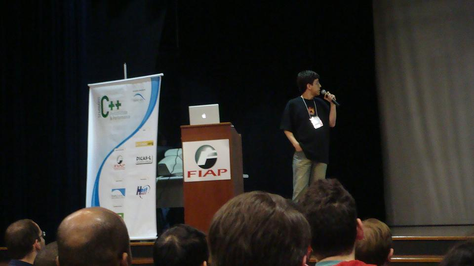
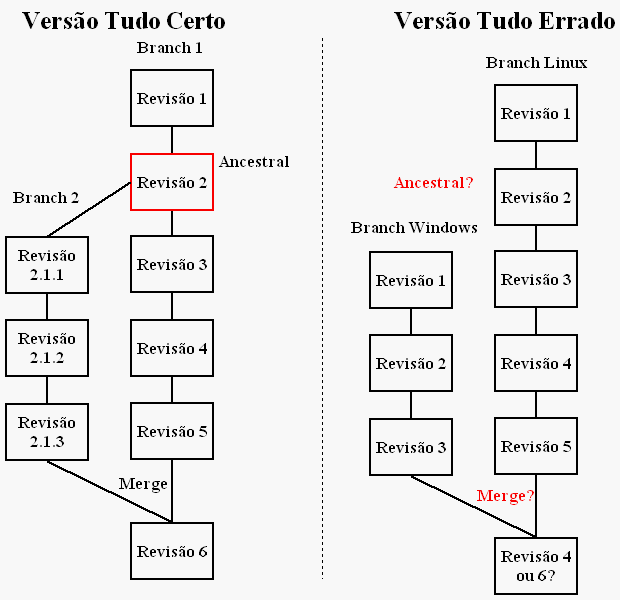

<!DOCTYPE html>
<html lang="en-us" dir="ltr" itemscope itemtype="http://schema.org/Article">
<head>
<meta charset="utf-8" />
<meta name="viewport" content="width=device-width, initial-scale=1"/>
<title>Blogue do Caloni</title>
<meta name="author" content="" />
<meta name="generator" content="Hugo 0.110.0">
<meta property="og:title" content="Blogue do Caloni"/>
<meta property="og:type" content="website"/>
<meta property="og:url" content="http://www.caloni.com.br/"/>
<meta property="og:image" content="/img/author.jpg"/>
<meta property="og:description" content=""/>
<link href="/index.xml" rel="feed" type="application/rss+xml" title="Blogue do Caloni"/>
<link rel="stylesheet" type="text/css" href="/css/custom.css"/>
<link rel="stylesheet" type="text/css" href="/css/jquery-ui.css"/>
<link rel="stylesheet" type="text/css" href="/css/board-min.css"/>
<script src="/js/jquery-1.10.2.js"></script>
<script src="/js/jquery-ui.js"></script>
<script src="/js/pgnyui.js"></script>
<script src="/js/pgnviewer.js"></script>
<script src="/js/copy_clipboard.js"></script>
<script>
var quick_search_posts = [ 
 ]; 
</script>
<script src="/js/quick_search.js"></script>
<script src="/js/list.js"></script>
<link rel="icon" href="/img/favicon.ico"/>
</head>
<body style="min-height:100vh;display:flex;flex-direction:column">
<nav class="navbar has-shadow is-white"
role="navigation" aria-label="main navigation">
<div class="container">
<div class="navbar-brand">
<pre><span style="font-size: 3px; margin: 0; display: block;">

&amp;*/. .*%@@@@@@@@@@@@&amp;/    , &amp;@@@@@@@@@@@@@@@@@@@@@@@@@@@@@@@@@@@@@@@@@@@@@@@@@@@
@@@@@@@@@#,*@@@@%,*&amp;@@@@@@@@@@@@@@@@@@@@@@@@@@@@@@@@@@@@@@@@@@@@@@@@@@@@@@@@@@@@
@@@@@@@@@@@@./@.(@@@@@@@@@@@@@@@@@@@@@@@@@@@@@@@@@@@@@@@@@@@@@@@@@@@@@@@@@@@@@@@
@@@@**#./((,*, *./((*,#,&amp;@@@@@@@@@@@@@@@@@@@@@@@@@@@@@@@@@@@@@@@@@@@@@@@@@@@@@@@
@@@@@.#@@%&amp;@@* (@@%&amp;@@/#@@@@@@@@@@@@@@@@@@@@@@@@@@@@@@@@@@@@@@@@@@@@@@@@@@@@@@@@
@@@@@,#@@&amp;&amp;@@, (@@&amp;&amp;@@*#@@@@@@@@@@@@@#/,,.         ..,/#&amp;@@@@@@@@@@@@@@@@@@@@@@@
@@@@@&amp;, .//      .//  .%@@@@@@&amp;#.  .,****.,*************,.  .(&amp;@@@@@@@@@@@@@@@@@
@@@*                     ,@/  .**,,,*********,   ,***,   ****    *@@@@@@@@@@@@@@
@#                         ,***      .******       ,***,*****,      *&amp;@@@@@@@@@@
&amp;                           ,**      .******.     .******************  (@@@@@@@@
                             ****..,*************************,    ,***   (@@@@@@
@@@@#,,,,,,,,,,,,,,,,,,,,*********,   ,**************,  .***,      .**. .  %@@@@
@@@@%                   .***,.,****,.,***,     ,****      ***.     ,******, /@@@
@@@@@&amp;.                ,**       *******,       *****,  .******************, *@@
@@@@@@@&amp;,            ,****      .********,.   .*************,  ,*****,    ,** /@
@@@@@@@@@@@@&amp;/ .****,    ************.   ****************************      **. #
@@@@@@@@@@@@@, *****,    ,***********    .******,   ,****.   .*****,***,,***** ,
@@@@@@@@@@@@&amp;..**************,  ,***********************       ,*,    ********..
@@@@@@@@@@@@&amp; ,**.    ,******.  .*******.    .**********,     .**********. .**, 
@@@@@@@@@@@@% ,*       ,***************.      .*****************************,   
@@@@@@@@@@@@@&amp;&amp;&amp;&amp;&amp;&amp;&amp;&amp;&amp;&amp;&amp;&amp;&amp;&amp;&amp;@,(&amp;&amp;&amp;&amp;@,(&amp;&amp;&amp;&amp;&amp;&amp;&amp;&amp;&amp;&amp;&amp;&amp;&amp;&amp;&amp;&amp;&amp;&amp;&amp;&amp;&amp;&amp;#*@&amp;&amp;&amp;@*#&amp;&amp;&amp;&amp;&amp;&amp;&amp;&amp;&amp;&amp;&amp;
@@@@@@@@@@@@@@@@@@@@@@@@@@@@(.#@@@@(.#@@@@@@@@@@@@@@@@@@@@@#**@@@@(.#@@@@@@@@@@@

</span></pre>
&nbsp;
<a class="navbar-item" href="months.html">
<div class="is-4">caloni::2008-06</div>
</a>
</div>
</div>
</nav>
<div class="container">
<div class="column">
<div style="min-height:56vh">
<div style="padding-bottom: 1em;"></div>
<ul style="list-style: none;">

<li><small><a href="2008-06.html#resultado-do-seminario-ccpp">Resultado do Seminário CCPP</a></small></li>

<li><small><a href="2008-06.html#launchpad-e-a-democracia-do-codigo-fonte">Launchpad e a democracia do código-fonte</a></small></li>

<li><small><a href="2008-06.html#declaracao-x-definicao">Declaração x definição</a></small></li>

<li><small><a href="2008-06.html#guia-basico-de-repositorios-no-bazaar">Guia básico de repositórios no Bazaar</a></small></li>

<li><small><a href="2008-06.html#primeiro-ano-do-novo-calonicombr">Primeiro ano do novo Caloni.com.br</a></small></li>

<li><small><a href="2008-06.html#como-fazer-merge-de-projetos-distintos-no-bazaar">Como fazer merge de projetos distintos no Bazaar</a></small></li>

<li><small><a href="2008-06.html#alinhamento-de-memoria-portavel">Alinhamento de Memória Portável</a></small></li>

<li><small><a href="2008-06.html#e-possivel-carregar-duas-dlls-gemeas-no-mesmo-processo">É possível carregar duas DLLs gêmeas no mesmo processo?</a></small></li>

<li><small><a href="2008-06.html#como-estou-trabalhando-com-o-bazaar">Como estou trabalhando com o Bazaar</a></small></li>

<li><small><a href="2008-06.html#primeiros-passos-na-documentacao-de-codigo-fonte-usando-doxygen">Primeiros passos na documentação de código-fonte usando Doxygen</a></small></li>

<li><small><a href="2008-06.html#reflexao-em-c">Reflexão em C++</a></small></li>
</ul>


<span id="resultado-do-seminario-ccpp" title="Resultado do Seminário CCPP"/></span>
<section id="section-resultado-do-seminario-ccpp">
<p class="title"><a href="2008-06.html#resultado-do-seminario-ccpp">#</a> Resultado do Seminário CCPP</p>
<p class="note-title"><small>2008-06-03  <a href="ccppbr.html">ccppbr</a> </small><a href="2008-06.html">^</a> <button onclick="copy_clipboard('section#section-resultado-do-seminario-ccpp')">ctrl_c</button></p>

<p>Aconteceu nesse fim-de-semana, como era previsto, o nosso primeiro Seminário CCPP Brasil, com direito a pessoas de todas as idades e origens, mas todas com algo em comum: a paixão e o interesse pelas linguagens-mestre do mundo da programação.</p>

<p>Começo esse artigo agradecendo a todos os que direta e indiretamente participaram para o sucesso do evento, entre eles os organizadores, o carro-chefe responsável por acordar o espírito C++ da galera no início do ano, os palestrantes e, claro, óbvio, toda a comunidade C++ que participou em corpo (vulgo hardware) e alma (vulgo software).</p>
<p>Termino a introdução fazendo uma minicrítica ao preço pago pelos participantes. Não que eu ache que seja muito, pelo contrário: dado o alto nível técnico das palestras, parece até mentira termos acesso a um evento com essa estrutura por tão pouco. Porém, o muito e o pouco são relativos, e ainda acredito que existam pessoas que não vão aos encontros por falta de recursos. Por isso mesmo vai um apelo para que nos futuros encontros tenhamos alguma forma de permitir às pessoas menos favorecidas de participar democraticamente dessa que é a expressão viva das linguagens C e C++ em nosso país.</p>
<p>Vamos às palestras!</p>
<h3>Dicas e Truques de Portabilidade, por Wanderley Caloni</h3>

<p>É muito difícil analisar uma palestra feita por você mesmo. É mais difícil ainda quando essa palestra é a primeira de uma batelada de argumentações de alto nível técnico que seguiram o dia. Posso dizer, no entanto, que consegui o que queria quando fui para o evento: demonstrar as dificuldades e as facilidades de tornar um código portável, independente se entre sistemas operacionais, ambientes ou compiladores.</p>
<p>Foi visto primeiramente o que faz da portabilidade uma coisa difícil. Detalhes como sintaxe e gramática fazem toda a diferença quando o que se almeja é um código limpo de imperfeições trazidas pelo ambiente de desenvolvimento. Também foi dada especial atenção às famigeradas extensões de compiladores, que fazem a linguagem parecer uma coisa que não é.</p>
<p>Por fim, foram apresentadas algumas sugestões movidas pela experiência e estudo dessas mesmas dificuldades. Para ilustrar, dois exemplos bem vivos de como um código portável deve se comportar, tanto no código-fonte quanto em sua documentação.</p>
<h3>Programação Concorrente com C++, por Fábio Galuppo</h3>

<p>Para quem está acostumado com os temas geralmente "gerenciados" de Fábio Galuppo com certeza deve ter se surpreendido com a descrição teórica dos inúmeros problemas que cercam a vida do programador multithreading. O palestrante partiu do mais simples, o conceito de threads, conceito que, segundo ele mesmo, pode ser explicado em 15 minutos, para algo mais sutil e que gera muitos erros escondidos: o conceito de locks (semáforos, mutexes, etc).</p>
<p>Os programadores em nível de sistema devem ter adorado o contexto histórico dos problemas (você sabia que o primeiro lock inventado foi o semáforo?) tanto quanto o contexto teórico (explicação sobre modelo de memória).</p>
<p>Um destaque especial foram os experimentos com código rodando de verdade no Visual Studio, como o exemplo que tenta criar o maior número de threads possível na arquitetura 64. Simplesmente assustador!</p>
<p>Se por um lado faltou tempo para explicar os usos e princípios das bibliotecas de programação paralela disponíveis e mais usadas do mercado, por outro a palestra preencheu uma lacuna importante na minha primeira palestra sobre threads em C++, demonstrando os erros mais comuns e o que não se deve fazer em programas que rodam mais de uma thread.</p>
<p>Mais uma vez voltando à teoria, a palestra foca mais uma vez em bons princípios de design, como o padrão de projeto monitor e a descrição dos modelos onde é justificado o uso de mais de uma thread no programa.</p>
<h3>Programação Multiplataforma Usando STL e Boost, por Rodrigo Strauss</h3>

<p>Como sempre, Strauss está apaixonado pelo Boost (e a STL). Descrevendo as partes mais importantes que todo programador C++ moderno deve saber sobre essas bibliotecas, ambas modernas, a palestra focou principalmente no uso do dia-a-dia, e as vantagens produtivas que o C++ atual pode ter sobre o velho e tradicional programa em C com listas encadeadas artesanais.</p>
<p>Entre as coisas mais importantes citadas, que todo programador do novo século deveria saber, estão:</p>
<ul><li>A total falta da necessidade de desalocarmos objetos manualmente em nossos programas, visto que o auto_ptr (STL) e shared_ptr (Boost) dão conta do recado de maneira impecável.</li>
<li>A total falta da necessidade de usarmos aqueles velhos arrays em C que quase nunca sabemos o tamanho exato para guardar nossos valores (e que continuamente colocávamos com o tamanho 100, MAX_PATH, ou UM_OUTRO_DEFINE_COMUM_EM_LINUX). A classe boost::array provê todas as funcionalidades básicas, além das avançadas, do uso de arrays tradicionais, sem qualquer overhead adicional de um array em C.</li>
<li>A total falta de necessidade de ficar convertendo strings e inteiros. Com a ajuda da classe std::string e de construções geniais como lexical_cast (Boost), felizmente podemos deixar nossas velhas funções que precisavam de um buffer, como _itoa (embora não-padrão).</li></ul>
<p>Enfim, para quem pôde ver, a palestra focou nos princípios que farão hoje em dia um programador C++ completo, profissional e que, como seus colegas de outras linguagens, se preocupa igualmente com a produtividade de seu código. Ah, sim, e não gosta nem um pouco de reinventar a roda.</p>
<h3>Técnicas de Otimização de Código, por Rodrigo Kumpera &amp; André Tupinambá</h3>

<p>Aparentemente o que pensei que seria, em minha sincera opinião, um desastre (dois palestrantes falando sobre a mesma coisa) se transformou em uma combinação estupenda de teoria e prática aplicadas à arte de otimização de código. Rodrigo e André conseguiram destrinchar o tema harmoniosamente, sempre dividido entre técnicas avançadas (algumas demonstradas pela experiência dos palestrantes) e teoria disciplinar, que visa alertar o wannabe que otimizar pode ser uma coisa boa; porém, preste atenção aos que já fizeram isso têm a dizer.</p>
<p>Com uma didática impecável, o novato nesse tema (como eu) pôde ver as dificuldades de conseguir determinar o objetivo de todo otimizador de código que, segundo eles, deve estar sempre atento na máxima de que "toda otimização é na verdade uma troca". Ou seja, se o programador quer melhor processamento, pagará com memória, se quiser otimizar espaço na RAM, irá gastar mais com processamento e/ou disco, e assim por diante.</p>

<p>Foram apresentados exemplos reais de otimização, além de dicas muito importantes sobre o comportamento das compilações de cada dia.  Você sabia, por exemplo, que ao declarar em escopos mais locais suas variáveis usadas apenas em pequenos trechos de código estará dando uma poderosa dica ao compilador para que ele consiga usar os registradores no máximo de sua capacidade?</p>
<p>Ao final, como é de praxe, tivemos um sorteio de ótimos livros sobre programação e C++ em geral, com destaque aos livros do Herb Sutter. Rodrigo Strauss, conhecido fundador dos encontros, recebeu sua mais que merecida homenagem ao receber um de seus livros autografados. É o mais novo MVP da comunidade!</p>
<p>E por falar em comunidade, e agora podemos ver claramente, estamos com uma força bem maior do que no início do ano. A seqüência de ótimos eventos, além de nossos mestres do conselho Jedi de programadores C++, prova finalmente que, se depender da qualidade dos desenvolvedores, o Brasil pode sim ser uma poderosa fonte de programas de qualidade que façam coisas bem mais interessantes do que acessar um banco SQL. Nós já temos a matéria-prima.</p>
<p>Imagens do evento cedidas por Fernando Roberto (valeu, Ferdinando!).</p>
</section><hr/>


<span id="launchpad-e-a-democracia-do-codigo-fonte" title="Launchpad e a democracia do código-fonte"/></span>
<section id="section-launchpad-e-a-democracia-do-codigo-fonte">
<p class="title"><a href="2008-06.html#launchpad-e-a-democracia-do-codigo-fonte">#</a> Launchpad e a democracia do código-fonte</p>
<p class="note-title"><small>2008-06-04  <a href="coding.html">coding</a> </small><a href="2008-06.html">^</a> <button onclick="copy_clipboard('section#section-launchpad-e-a-democracia-do-codigo-fonte')">ctrl_c</button></p>

<p>Após a publicação dos projetos que ando mexendo no próprio saite do Caloni.com.br, recebi uma enxurrada de downloads e quase atingi meu limite de fluxo mensal no provedor.</p>
<p>Devido a esse problema inesperado, irei fazer o inevitável: publicar os projetos em um repositório sério. E aproveitando que já estou usando o Bazaar, nada melhor que usar o Launchpad.net.</p>
<p>O Launchpad nada mais é do que um lugar onde é possível publicar seus projetos de fonte aberto para que pessoas possam ter livre acesso ao seu histórico de mudanças, assim como a liberdade de criar sua própria ramificação (branch). O esquema todo é organizado no formato comunidade, o que permite o compartilhamento não só de código, mas de bugs, traduções e, principalmente, idéias.</p>
<p>A idéia é uma das primeiras que usa a modalidade de controle de fonte distribuído, e permite o uso do Bazaar como o controlador oficial, ou importação de outros controles de fonte, em um processo conhecido como espelhamento. Tudo foi feito de forma a amenizar o processo de migração dos sistemas de controle de código centralizado, como CVS e Subversion.</p>
<p>Para ter acesso aos meus projetos iniciais é simples: basta usar o mesmo comando que é usado para obter um novo branch de um projeto do Bazaar:</p>
<ul><li><a href="posts.html?q=mousetool">MouseTool</a> - Simulador de clique de mouse</li></ul>
<pre>   bzr branch https://code.launchpad.net/mtool</pre>
<a href="posts.html?q=influence-board">Influence Board</a> - Complemento ao Winboard que mostra a influência das peças</li></ul>
<pre>   bzr branch https://code.launchpad.net/infboard</pre>
<a href="posts.html?q=conversor-de-houaiss-para-babylon-parte-2">Conversor Houaiss Babylon</a> - Converte de um dicionário para o outro</li></ul>
<pre>   bzr branch https://code.launchpad.net/houaiss2babylon</pre>
<p>&gt; Atualização: Aviso de plantão. Não irei mais atualizar os projetos acima no LaunchPad, pois estou considerando reorganizar os fontes para algo mais simplificado. Aguardem por novidades no próprio blogue.</p>
<p>Como o Bazaar foi feito integrado com o Launchpad, também é possível usar um comando bem mais fácil:</p>
<pre>   bzr branch lp:project_name</pre>
<p>Assim como é possível usar comandos de repositório, também é possível navegar pelo histórico de mudanças do projeto simplesmente usando os linques acima no navegador de sua preferência. E é nessa hora que começa a ficar interessante publicar seu projeto na web. Por falar nisso, que tal aprender como criar seu próprio projeto no Launchpad?</p>
<p>Tudo que precisamos é de um login, facilmente obtido na página principal, e de registrar um projeto. Para criar o primeiro branch e fazermos alterações precisaremos também de um par de chaves pública e privada para a conexão SSH criada automaticamente pelo Bazaar. Tudo isso é facilmente possível com o uso das ferramentas do <a href="http://www.chiark.greenend.org.uk/~sgtatham/putty/download.html">Putty</a>, um cliente SSH para Windows.</p>
<p>Dessa forma os passos são os seguintes:</p>
<pre>1. Criar um login
2. Registrar um projeto
3. Criar um par de chaves através do PuTTYgen
   Devido a alguns problemas, recomendo que use o texto exibido na tela do gerador de chaves em vez de copiar diretamente do arquivo da chave pública para o cadastro no saite. Guarde bem essas chaves com você, pois você as usará sempre que necessário fazer uma modificação no projeto.
4. Atualizar no cadastro do saite (item "Update SSH keys")
5. Usar o Pageant para carregar a chave privada na memória
6. Use os comandos do Bazaar passando o usuário e o branch:
   bzr branch lp:~seu-usuario/projeto/branch</pre>
<p>Simples e direto. E funciona!</p>


</section><hr/>


<span id="declaracao-x-definicao" title="Declaração x definição"/></span>
<section id="section-declaracao-x-definicao">
<p class="title"><a href="2008-06.html#declaracao-x-definicao">#</a> Declaração x definição</p>
<p class="note-title"><small>2008-06-06  <a href="coding.html">coding</a> </small><a href="2008-06.html">^</a> <button onclick="copy_clipboard('section#section-declaracao-x-definicao')">ctrl_c</button></p>

<p>Uma diferença que eu considero crucial na linguagem C/C++ é a questão da declaração/definição (em inglês, declaration/definition). É a diferença entre esses dois conceitos que permite, por exemplo, que sejam criadas estruturas prontas para serem conectadas a listas ligadas:</p>
<pre>   struct Element
   {
      int x;
      int y;
      Element* next;
   };</pre>
<p>Por outro lado, e mais importante ainda, é ela que permite que as funções sejam organizadas em unidades de tradução (cpps) distintas para depois se unirem durante o link, mesmo que entre elas exista uma relação de dependência indissociável:</p>

<p>Existem diversas formas de entender esses dois conceitos. Eu prefiro explicar pela mesma experiência que temos quando descobrimos a divisão hardware/software:</p>
<ul><li>Hardware é o que você chuta</li>
<li>Software é o que você xinga</li></ul>
<p>Exatamente. Hardware é algo paupável, que você pode até chutar se quiser. Por exemplo, a sua memória RAM! No entanto, software é algo mais abstrato, que nós, seres humanos, não temos a capacidade de dar umas boas pauladas. Portanto, nos abstemos a somente xingar o maldito que fez o programa "buggento".</p>
<p>Da mesma forma, uma declaração em C/C++ nos permite moldar como será alguma coisa na memória, sem no entanto ocupar nem um mísero byte no seu programa:</p>
<pre>   /* tamanho em memória: zero bytes */
   int func(int x, int y, int z);
   
   struct Teste
   {
     /* tamanho em memória: zero bytes */
   	char bufao[0x100000]; 
     /* tamanho em memória: zero bytes */
   	int intao[0xffffff];
   };
   
   /* tamanho em memória: adivinha! */
   extern int x;</pre>
<p>Por outro lado, a definição, o hardware da história, sempre ocupará alguma coisa na memória RAM, o que, de certa forma, permite que você chute uma variável (embora muitas outras também irão para o saco).</p>
<pre>   /* tamanho em memória: */
   int func(int x, int y, int z)
   {
   	int ret = x + y + z; /* alguns _asm add + */
   	return ret;          /* um _asm ret */
   }
   /* tamanho em memória: 
      0x100000 + 0xffffff * 4 
      = 1048576 bytes
   */
   Teste tst;
   /* tamanho em memória: 
      sizeof(int) bytes
   */
   int x;</pre>
<p>Dessa comparação só existe uma pegadinha: uma definição também é uma declaração. Por exemplo, nos exemplos acima, além de definir func, tst e x, o código também informa ao compilador que existe uma função chamada func, que existe uma variável tst do tipo Teste e uma variável x do tipo int.</p>
<p>Informa ao compilador? Essa é uma outra ótima maneira de pensar a respeito de declarações: elas sempre estão conversando diretamente com o compilador. Por outro lado, nunca conversam diretamente com o hardware, pois ao executar seu código compilado, as declarações não mais existem. Foi apenas um interlúdio para que o compilador conseguisse alocar memória da maneira correta.</p>
<p>Complicado? Talvez seja, mesmo. Mas é algo que vale a pena fixar na mente. Isso, é claro, se você quiser ser um programador C/C++ mais esperto que os outros e resolver pequenos problemas de compilação que muitos perdem horas se perdendo.</p>
<p>Então por que diabos a separação declaração/definição consegue definir coisas como listas ligadas, como no código acima? A resposta é um pouco ambígua, mas representa regra essencial na sintaxe da linguagem: após a definição do nome e do tipo de declaração envolvida podemos referenciá-la como declaração, ou seja, não ferindo a limitação de que não sabemos o tamanho de uma variável do tipo declarado. Dessa forma, é perfeitamente legal definirmos um ponteiro para uma estrutura que ainda não se sabe muita coisa, além de que é uma estrutura:</p>
<pre>   /* atenção: declaração apenas! */
   struct Estrutura;
   /* ponteiro para declaração: 
      não sabemos o tamanho ainda
   */
   Estrutura* st;</pre>
<p>Dessa forma, o começo de uma definição de estrutura já declara o nome da estrutura antes de terminar a declaração do tipo inteiro. Bizarro, não? De qualquer forma, isso permite a construção clássica de lista ligada:</p>
<pre>   /* a partir daqui Estrutura já está visível */
   struct Estrutura
   {
     /* recursividade? é apenas um ponteiro! */
   	Estrutura* st;
   };</pre>
<p>Se vermos pelo lado prático, de qualquer forma seria impossível definir uma variável dentro dela mesma, pois isso geraria uma recursão infinita de definições, e, como sabemos, os recurso da máquina são finitos.</p>
</section><hr/>


<span id="guia-basico-de-repositorios-no-bazaar" title="Guia básico de repositórios no Bazaar"/></span>
<section id="section-guia-basico-de-repositorios-no-bazaar">
<p class="title"><a href="2008-06.html#guia-basico-de-repositorios-no-bazaar">#</a> Guia básico de repositórios no Bazaar</p>
<p class="note-title"><small>2008-06-10  <a href="coding.html">coding</a> </small><a href="2008-06.html">^</a> <button onclick="copy_clipboard('section#section-guia-basico-de-repositorios-no-bazaar')">ctrl_c</button></p>

<p>Alguns conceitos-chave antes de trabalhar com o Bazaar são:</p>
<ul><li>Revision (Revisão). Um snapshot dos arquivos que você está trabalhando.</li>
<li>Working Tree (Árvore de Trabalho). Um diretório contendo seus arquivos controlados por versão e subdiretórios.</li>
<li>Branch (Ramificação). Um grupo ordenado de revisões que descreve o histórico de um grupo de arquivos.</li>
<li>Repository (Repositório). Um depósito de revisões.</li></ul>
<p>Agora vamos brincar um pouco com os conceitos.</p>
<p>O uso mais simples que existe no Bazaar é o controle de uma pasta sozinha, conhecida como uma Standalone Tree. Como toda Working Tree, ela possui um repositório relacionado, que no caso está dentro dela mesmo, na pasta oculta ".bzr".</p>
<p>Pra criar uma Standalone Tree, tudo que precisamos é usar o comando init de dentro da pasta a ser controlada, quando é criado um repositório local. Adicionamos arquivos para o repositório com o comando add, e finalizamos nossa primeira versão com o comando commit.</p>
<pre>   C:\Tests>cd project1
   
   C:\Tests\project1>bzr init
   
   C:\Tests\project1>bzr add
   added AUTHORS
   added COPYING
   added COPYRIGHT
   added ChangeLog
   added ChangeLog.2
   added FAQ
   ...
   added winboard/extends/infboard/main.c
   added winboard/extends/infboard/msvc.mak
   added winboard/extends/infboard/support.c
   
   C:\Tests\project1>bzr commit -m "Comentario sobre a revisao"
   Committing to: C:/Tests/project1/
   added AUTHORS
   added COPYING
   added COPYRIGHT
   added ChangeLog
   added ChangeLog.2
   added FAQ
   ...
   added winboard/extends/infboard/main.c
   added winboard/extends/infboard/msvc.mak
   added winboard/extends/infboard/support.c
   Committed revision 1.
   
   C:\Tests\project1></pre>
<p>Feito. A partir daí temos um repositório onde podemos realizar o comando commit sempre que quisermos marcar um snapshot em nosso código-fonte.</p>
<p>Se quisermos fazer uma alteração muito grande em nosso pequeno projeto seria melhor termos outro diretório onde trabalhar antes de realizar o commit na versão estável. Para isso podemos usar o comando branch, que cria uma nova pasta com todo o histórico da pasta inicial até esse ponto. Os históricos em um branch estão duplicados em ambas as pastas, e portanto são independentes. Você pode apagar a pasta original ou a secundária que terá o backup inteiro no novo branch.</p>
<pre>   C:\Tests\project1>cd ..
   
   C:\Tests>bzr branch project1 project1-changing
   Branched 1 revision(s).
   
   C:\Tests>cd project1-changing
   
   C:\Tests\project1-changing></pre>
<p>Criar um novo branch totalmente duplicado pode se tornar um desperdício enorme de espaço em disco (e tempo). Para isso foi criado o conceito de Shared Repository, que basicamente é um diretório acima dos branchs que trata de organizar as revisões em apenas um só lugar, com a vantagem de otimizar o espaço. Nesse caso, antes de criar o projeto, poderíamos usar o comando init-repo na pasta mãe de nosso projeto, e depois continuar com o processo de init dentro da pasta do projeto.</p>
<pre>   C:\>bzr init-repo Tests
   
   C:\>cd Tests
   
   C:\Tests>bzr init project1
   C:\Tests>cd project1
   C:\Tests\project1>bzr add
   added AUTHORS
   added COPYING
   added COPYRIGHT
   added ChangeLog
   added ChangeLog.2
   added FAQ
   ...
   added winboard/extends/infboard/main.c
   added winboard/extends/infboard/msvc.mak
   added winboard/extends/infboard/support.c
   
   C:\Tests\project1>bzr commit -m "Comentario sobre a revisao"
   Committing to: C:/Tests/project1/
   added AUTHORS
   added COPYING
   added COPYRIGHT
   added ChangeLog
   added ChangeLog.2
   added FAQ
   ...
   added winboard/extends/infboard/main.c
   added winboard/extends/infboard/msvc.mak
   added winboard/extends/infboard/support.c
   Committed revision 1.
   C:\Tests\project1></pre>
<p>Se compararmos o tamanho, veremos que o repositório compartilhado é que detém a maior parte dos arquivos, enquanto agora o ".bzr" que está na pasta do projeto possui apenas dados de controle. A mesma coisa irá acontecer com qualquer branch criado dentro da pasta de repositório compartilhado.</p>
<p>Mas já criamos nossos dois branches cheios de arquivos, certo? Certo. Como já fizemos isso, devemos criar uma nova pasta como repositório compartilhado e criar dois novos branches dentro dessa pasta, cópias dos dois branches gordinhos:</p>
<pre>   C:\Tests>bzr init-repo project1-repo
   
   C:\Tests>bzr branch project1 project1-repo\project1
   Branched 1 revision(s).
   
   C:\Tests>bzr branch project1-changing project1-repo\project-changing
   Branched 1 revision(s).
   
   C:\Tests></pre>
<p>Isso irá recriar esses dois branches como os originais, mas com a metade do espaço em disco, pois seus históricos estarão compartilhados na pasta project1-repo.</p>
<p>O SubVersion é um sistema de controle centralizado. O Bazaar consegue se comportar exatamente como o SubVersion, além de permitir carregar o histórico inteiro consigo. Quem decide como usá-lo é apenas você, pois cada usuário do sistema tem a liberdade de escolher a melhor maneira.</p>
<p>Os comandos para usar o Bazaar à SubVersion são os mesmos do SubVersion: checkout e commit. No entanto, um checkout irá fazer com que seu commit crie a nova revisão primeiro no seu servidor (branch principal) e depois localmente. Se você não deseja criar um histórico inteiro localmente, pode criar um checkout leve (parâmetro --lightweight), que apenas contém arquivos de controle. No entanto, se o servidor de fontes não estiver disponível, você não será capaz de ações que dependam dele, como ver o histórico ou fazer commits.</p>
<pre>   C:\Tests\client>bzr checkout ..\server\project1
   
   C:\Tests\client>cd project1
   
   C:\Tests\client\project1>echo "New changes" >> FAQ
   
   C:\Tests\client\project1>bzr commit -m "New changes comment"
   Committing to: C:/Tests/server/project1/
   modified FAQ
   Committed revision 2.
   
   C:\Tests\client\project1>bzr log -l 1 ..\..\server\project1</pre>
-----------------------------------------------------------</li></ul>
<pre>   revno: 2
   committer: Wanderley Caloni <wanderley@caloni.com.br>
   branch nick: project1
   timestamp: Sun 2008-06-08 19:52:17 -0300
   message:
     New changes comment
   
   C:\Tests\client\project1></pre>
<p>Na verdade, o Bazaar vai além, e permite que um branch/checkout específico seja conectado e desconectado em qualquer repositório válido. Para isso são usados os comandos bind e unbind. Um branch conectado faz commits remotos e locais, enquanto um branch unbinded faz commits apenas locais. É possível mudar esse comportamento com o parâmetro --local, e atualizar o branch local com o comando update.</p>
</section><hr/>


<span id="primeiro-ano-do-novo-calonicombr" title="Primeiro ano do novo Caloni.com.br"/></span>
<section id="section-primeiro-ano-do-novo-calonicombr">
<p class="title"><a href="2008-06.html#primeiro-ano-do-novo-calonicombr">#</a> Primeiro ano do novo Caloni.com.br</p>
<p class="note-title"><small>2008-06-13  </small><a href="2008-06.html">^</a> <button onclick="copy_clipboard('section#section-primeiro-ano-do-novo-calonicombr')">ctrl_c</button></p>

<p>Melhor que ter feito aniversário de dois anos no antigo blogue foi ter feito o primeiro aninho nesse novo formato, mais atualizado, mais diversificado e mais antenado com o meu dia-a-dia real.</p>
<p>No dia 14 de junho de 2007 foram publicadas as <a href="posts.html?q=hello-world">boas vindas</a>, e desde então o número de artigos tem se mantido sempre no formato três por semana, dois por semana, consecutivamente, distribuídos na segunda, quarta e sexta, terça e quinta. Esse <a href="posts.html?q=influence-board">jogo de xadrez</a> tem me mantido bem ocupado, admito, mas no final até que vale a pena. Chegamos à marca de 130 artigos e 182 comentários dentro de 29 categorias.</p>
<p>E por falar em variedade, falamos de vários assuntos desde o início. Entre um devaneio e outro, conseguimos explorar algumas particularidades das linguagens C/C++, o funcionamento obscuro do Windows, algumas dicas sobre programação e ferramentas, e até tivemos tempo de explorar coisas mais específicas, como depuração, engenharia reversa, controle de fonte e C++ Builder.</p>
<p>No placar, as coisas ficaram mais ou menos distribuídas:</p>
<pre>   Assunto      Artigos
   ===========  =======
   Programação  10
   C++          31
   Windows      11
   Depuração    10
   WinDbg       18
   Dicas        27
   Código       15</pre>
<p>Sobre os visitantes, eles ainda são uma incógnita. Relacho meu, admito. Não faço nem uma simples pesquisa para saber se a maioria está no nível iniciante Juquinha ou avançado "The Guy". Prometo melhorar isso no segundo ano. Em números houve um crescimento de 711 visitantes únicos em janeiro de 2007 para 5223 em maio de 2008.</p>
<p>Pela quantidade crescente de visitantes, dá até pra imaginar que estou "no caminho certo". Mas, quer saber? Que caminho é esse? Não quero fundar um fã-clube, não quero me tornar rico e famoso (talvez só a parte do rico) e, muito menos, influenciar ninguém. Além do que, quanto mais velho um saite se torna, e sendo freqüentemente atualizado, é natural ser mais visitado. Por isso que eu acredito piamente que na maioria dos casos estatística é uma merda, pois mostra uma realidade cheia de conteúdo mas sem nenhum significado.</p>
<p>Por outro lado, alguns dados são muito interessantes, pois podem moldar o futuro de um blogueiro profissional (não é o meu caso), como os resultados mais-mais do google:</p>
<pre>   Palavras     Buscas
   ===========  =======
   softice      86
   windbg       27
   caloni       26</pre>
<p>No entanto, saber que o topo da lista é formado por buscas por "softice" não irá me fazer escrever mais artigos sobre esse depurador mais do <a href="posts.html?q=introducao-ao-softice">que eu já escrevi</a>, até porque já é um depurador morto usado hoje em dia em raríssimos casos (no meu caso). Se você quer craquear um programa, mesmo que isso seja contra a lei, aprenda WinDbg que você ganha mais!</p>
<p>Das novidades que aconteceram durante esse ano, a maior e mais interessante foi o renascimento do nosso grupo de C++, que talvez continue dessa vez a sua vida normal. Ou não. Esperemos que sim =)</p>
<p>Eu fico sinceramente muito feliz em saber que existem muito mais pessoas interessadas em C++ do que eu mesmo, até porque isso me dá muito mais tempo para escrever sobre outras coisas que não seja C++ que, admiro humildemente, não chego a usar 20% no meu dia-a-dia.</p>


</section><hr/>


<span id="como-fazer-merge-de-projetos-distintos-no-bazaar" title="Como fazer merge de projetos distintos no Bazaar"/></span>
<section id="section-como-fazer-merge-de-projetos-distintos-no-bazaar">
<p class="title"><a href="2008-06.html#como-fazer-merge-de-projetos-distintos-no-bazaar">#</a> Como fazer merge de projetos distintos no Bazaar</p>
<p class="note-title"><small>2008-06-16  </small><a href="2008-06.html">^</a> <button onclick="copy_clipboard('section#section-como-fazer-merge-de-projetos-distintos-no-bazaar')">ctrl_c</button></p>

<p>O problema foi o seguinte: Nós iniciamos o controle de fonte pelo Bazaar na parte Linux do projeto, já que ela não iria funcionar pelo Source Safe, mesmo. Dessa forma apenas um braço do projeto estava no controle de fonte e o resto não.</p>
<p>No segundo momento da evolução decidimos começar a migrar os projetos para o Bazaar, inclusive a parte daquele projeto que compila no Windows. Maravilha. Ambos sendo controlados é uma beleza, não é mesmo?</p>
<p>Até que veio o dia de juntar.</p>
<p>O processo de merge de um controle de fonte supõe que os branches começaram em algum ponto em comum; do contrário não há como o controlador saber as coisas que mudaram em paralelo. Pois é achando a modificação ancestral, pai de ambos os branches, que ele irá medir a dificuldade de juntar as versões novamente. Se não existe ancestral, não existe análise. Como exemplificado na figura:</p>

<p>Acontece que existe um plugin esperto que consegue migrar revisões (commits) entre branches sem qualquer parentesco. Não me pergunte como ele faz isso. Mas ele faz. E foi assim que resolvemos o problema dos branches órfãos.</p>
<p>Para instalar o plugin do rebase, basta baixá-lo e copiar sua pasta extraída com um nome válido no Python (rebase, por exemplo). A partir daí os comandos do plugin estão disponíveis no prompt do Bazaar, assim como a instalação de qualquer plugin que cria novos comandos.</p>
<pre>   >bzr help commands
   add             Add specified files or directories.
   annotate        Show the origin of each line in a file.
   bind            Convert the current branch into a checkout of the supplied branch.
   branch          Create a new copy of a branch.
   ...
   push            Update a mirror of this branch.
   rebase          Re-base a branch. [rebase]
   rebase-abort    Abort an interrupted rebase [rebase]
   rebase-continue Continue an interrupted rebase after resolving conflicts [rebase]
   rebase-todo     Print list of revisions that still need to be replayed as part of the  [rebase]
   reconcile       Reconcile bzr metadata in a branch.
   reconfigure     Reconfigure the type of a bzr directory.
   register-branch Register a branch with launchpad.net. [launchpad]
   remerge         Redo a merge.
   remove          Remove files or directories.
   remove-tree     Remove the working tree from a given branch/checkout.
   renames         Show list of renamed files.
   replay          Replay commits from another branch on top of this one. [rebase]
   resolve         Mark a conflict as resolved.
   revert          Revert files to a previous revision.
   ...
   whoami          Show or set bzr user id.</pre>
<p>O comando que usamos foi o replay, que não é comando principal do plugin, mas que resolve esse problema de maneira quase satisfatória. Como era tudo o que tínhamos, valeu a pena.</p>
<p>O processo que usei foi de usar esse comando n vezes para buscar revisões de um branch e colocar no outro. Um grande problema com ele é que ao encontrar merges no branch origem ele se perde e o usuário tem que fazer as modificações "na mão". Deu um pouco de trabalho, mas conseguimos migrar nossos commits mais importantes e deixar o projeto inteiro, Linux+Windows, em um branch só.</p>
<pre>   C:\Tests>bzr init linux
   
   C:\Tests>cd linux
   
   C:\Tests\linux>copy con lnx
   linux
   ^Z
           1 arquivo(s) copiado(s).
   
   C:\Tests\linux>bzr add
   added lnx
   
   C:\Tests\linux>bzr commit -m "Linux 1"
   Committing to: C:/Tests/linux/
   added lnx
   Committed revision 1.
   
   C:\Tests\linux>copy con lnx2
   linux2
   ^Z
           1 arquivo(s) copiado(s).
   
   C:\Tests\linux>bzr add
   added lnx2
   
   C:\Tests\linux>bzr commit -m "Linux 2"
   Committing to: C:/Tests/linux/
   added lnx2
   Committed revision 2.
   
   C:\Tests\linux>cd ..
   
   C:\Tests>bzr init windows
   
   C:\Tests>cd windows
   
   C:\Tests\windows>copy con win1
   windows
   ^Z
           1 arquivo(s) copiado(s).
   
   C:\Tests\windows>bzr add
   added win1
   
   C:\Tests\windows>bzr commit -m "Windows 1"
   Committing to: C:/Tests/windows/
   added win1
   Committed revision 1.
   
   C:\Tests\windows>copy con win2
   windows2
   ^Z
           1 arquivo(s) copiado(s).
   C:\Tests\windows>bzr add
   added win2
   
   C:\Tests\windows>bzr commit -m "Windows 2"
   Committing to: C:/Tests/windows/
   added win2
   Committed revision 2.
   
   C:\Tests\linux>cd ..
   
   C:\Tests>cd linux
   
   C:\Tests\linux>bzr replay ..\windows -r1..2
   All changes applied successfully.
   Committing to: C:/Tests/linux/
   added win1
   Committed revision 3.
   All changes applied successfully.
   Committing to: C:/Tests/linux/
   added win2
   Committed revision 4.
   C:\Tests\linux>bzr log</pre>
-----------------------------------------------------------</li></ul>
<pre>   revno: 4
   committer: Wanderley Caloni <wanderley@caloni.com.br>
   branch nick: windows
   timestamp: Mon 2008-06-16 07:17:10 -0300
   message:
     Windows 2</pre>
-----------------------------------------------------------</li></ul>
<pre>   revno: 3
   committer: Wanderley Caloni <wanderley@caloni.com.br>
   branch nick: windows
   timestamp: Mon 2008-06-16 07:16:52 -0300
   message:
     Windows 1</pre>
-----------------------------------------------------------</li></ul>
<pre>   revno: 2
   committer: Wanderley Caloni <wanderley@caloni.com.br>
   branch nick: linux
   timestamp: Mon 2008-06-16 07:16:24 -0300
   message:
     Linux 2</pre>
-----------------------------------------------------------</li></ul>
<pre>   revno: 1
   committer: Wanderley Caloni <wanderley@caloni.com.br>
   branch nick: linux
   timestamp: Mon 2008-06-16 07:16:01 -0300
   message:
     Linux 1
   
   C:\Tests\linux>ls
   lnx  lnx2  win1  win2
   
   C:\Tests\linux></pre>
<p>O resultado:</p>

</section><hr/>


<span id="alinhamento-de-memoria-portavel" title="Alinhamento de Memória Portável"/></span>
<section id="section-alinhamento-de-memoria-portavel">
<p class="title"><a href="2008-06.html#alinhamento-de-memoria-portavel">#</a> Alinhamento de Memória Portável</p>
<p class="note-title"><small>2008-06-18  <a href="coding.html">coding</a> </small><a href="2008-06.html">^</a> <button onclick="copy_clipboard('section#section-alinhamento-de-memoria-portavel')">ctrl_c</button></p>

<p>Como vimos durante o seminário CCPP, o alinhamento de memória pode ser problemático durante momentos críticos, como migração de plataforma (16 para 32 bits) e de ambiente (compilador novo). A forma como a memória é alinhada influi diretamente em algoritmos de criptografia ou de rede, para citar dois exemplos bem comuns, fazendo com que o que funcionava antes não funcione mais sem mexer uma única linha de código. Eu já vi isso. E isso não é bom.</p>
<p>A raiz do problema é que, dependendo do alinhamento usado pelo compilador, o sizeof de uma variável pode mudar de valor, mesmo que o tamanho útil não mude. Por exemplo, vamos supor que temos uma dada estrutura que iremos encriptar:</p>
<pre>   struct S
   {
       /* 4 bytes */
       int size;
       /* 31 bytes */
       char name[31];
   };
   /* 4 + 31 = 35 bytes */</pre>
<p>Se usarmos a construção "sizeof(struct S)", podemos obter o valor 35 caso o alinhamento seja feito em 1 byte, ou podemos obter o valor 40 se o alinhamento estiver configurado em 8 bytes. E é aí que começa o problema.</p>
<p>Já pensando nesse problema, os projetistas de vários compiladores suportam uma extensão não-padrão que permite definir, para um dado conjunto de estruturas e variáveis, o alinhamento que deve ser seguido. Isso de cara já resolve o problema, se sua solução usar apenas compiladores que suportem essa idéia. No Visual C++ essa idéia é traduzida pela diretiva pragma, que é definida no padrão C (6.8.6) e C++ (16.6). Seu uso não torna um programa não-padrão. No entanto, o que vai depois da diretiva é dependente da implementação e não é garantido que irá funcionar.</p>
<p>Usando essas diretivas ao compilador nossa estrutura sempre terá 40 bytes ocupados na memória, pois o alinhamento foi forçado em 8 bytes. Existem aqueles compiladores que não suportam essa idéia da mesma forma, ou não suportam de jeito nenhum. Para esses casos, alguns desvios de comportamento são necessários. A grande pergunta é se isso é possível de ser feito de forma 100% padrão. E, pelo que eu pude constatar, é possível, sim:</p>
<pre>   #include <stdio.h>
   
   union Align
   {
     struct S
     {
       char buf[13];
       int x;
     }
     t;
   
     unsigned char align[
       sizeof(struct S) % 8 
       ?
       (sizeof(struct S) / 8 + 1) * 8
       :
       (sizeof(struct S))
     ];
   };</pre>
<p>O código acima usa o conceito de união de estruturas (union) para fazer valer um alinhamento na marra (no caso, 8). Uma estrutura, como todos sabem, amontoa os seus membros um após o outro na memória. Dessa forma podemos tratar um bloco de memória com um leiaute que definimos com outros tipos. Em uma união, os membros não são amontoados um após o outro. Todos eles começam no mesmo ponto da memória. Eles se sobrescrevem. O tamanho da união sempre é o tamanho do seu maior membro, e não a soma de todos. É um tanto difícil de descrever esse leiaute, mas imagine que você tenha apenas uma posição na memória e queira chamá-la de vários nomes e tamanhos diferentes. Essa é a união.</p>
<p>Como deve ser fácil de imaginar, uma união não tem tanto uso quanto uma estrutura, mas ainda assim faz parte da linguagem. Ela possibilita enxergar a mesma região de memória sob vários ângulos. Podemos descobrir a organização de um inteiro na memória, por exemplo, byte a byte. Dependendo se a plataforma onde o programa acima é compilado, esse leiaute pode mudar. O motivo é que cada plataforma e compilador terá sua maneira de traduzir o código C na memória.</p>
<p>Agora que sabemos o que são uniões fica fácil entender o esquema da solução portável. A union acima simplesmente usa a segunda estrutura como uma auxiliar de alinhamento. Com ela do tamanho múltiplo do alinhamento desejado forçamos a união inteira a ter esse alinhamento, independente do tamanho da estrutura útil, a que iremos usar para armazenar os dados. Todo o resto é usado para alinhar na memória.</p>
<p>Tudo que temos que saber para fazer o alinhamento é o tamanho normal de nosso tipo útil (struct S). A partir desse valor deduzimos o próximo número que seja múltiplo de 8, através da seguinte construção:</p>
<pre>   sizeof(struct S) % 8 
   ?
   (sizeof(struct S) / 8 + 1) * 8
   :
   (sizeof(struct S))</pre>
<p>Ou seja, se S já for múltiplo de 8 é o próprio valor. Se não for, então dividimos por 8 e multiplicamos pelo mesmo valor adicionado de um, o que nos retorna o próximo múltiplo.</p>
<p>É lógico que, como se trata de uma construção onde temos completo domínio dos tipos e valores envolvidos, transformar isso em um template é "pedaço de torta".</p>
<pre>   template<typename T, int A>
   union UAlign
   {
     T t;
   
     unsigned char align[
       sizeof(T) % A
       ?
       (sizeof(T) / A + 1) * A
       :
       (sizeof(T))
     ];
   };</pre>
<p>E essa é a melhor parte de descobrir um padrão em um tipo: o template nasce quase que naturalmente. A beleza da linguagem floresce.</p>
</section><hr/>


<span id="e-possivel-carregar-duas-dlls-gemeas-no-mesmo-processo" title="É possível carregar duas DLLs gêmeas no mesmo processo?"/></span>
<section id="section-e-possivel-carregar-duas-dlls-gemeas-no-mesmo-processo">
<p class="title"><a href="2008-06.html#e-possivel-carregar-duas-dlls-gemeas-no-mesmo-processo">#</a> É possível carregar duas DLLs gêmeas no mesmo processo?</p>
<p class="note-title"><small>2008-06-21  <a href="coding.html">coding</a> </small><a href="2008-06.html">^</a> <button onclick="copy_clipboard('section#section-e-possivel-carregar-duas-dlls-gemeas-no-mesmo-processo')">ctrl_c</button></p>

<p>Um <a href="http://www.dumpanalysis.org/blog/index.php/2008/06/19/crash-dump-analysis-patterns-part-64/">dos últimos artigos</a> de Dmitry Vostokov, e tenho que falar assim porque o cara escreve muito em pouco tempo, fala sobre os perigos de termos uma mesma DLL carregada duas vezes em um único processo, muitas vezes em versões diferentes. Para os observadores atentos como Dmitry esse é um perigo que muitas vezes temos que estar preparados. Para os espertinhos de plantão, a resposta padrão seria: "não vou me preocupar, porque o contador de instâncias cuida disso".</p>
<p>Será mesmo tão simples?</p>
<p>Vamos supor um caso bem simples e plausível, que é exatamente o mesmo do artigo do Crash Dump Analysis: um produto qualquer possui dois pontos em que ele carrega a mesma DLL. Contudo, no primeiro ponto é usado um caminho relativo, dentro da pasta DLL; na segunda chamada é usado o caminho atual. Se existir de fato duas DLLs, mesmo que idênticas, nesses lugares, então teremos duas instâncias da "mesma DLL" carregadas no processo.</p>
<p>O código do aplicativo apenas tenta carregar a DLL em dois lugares distintos e exibe o endereço para onde elas foram mapeadas em nosso processo de teste:</p>
<pre>
#include <windows.h>
#include <stdio.h>
int main()
{
	HMODULE dll1 = LoadLibrary(".\\DLL\\DLL.dll");
	HMODULE dll2 = LoadLibrary(".\\DLL.dll");
	printf("First DLL: %p\nSecond DLL: %p",
			dll1, dll2);
	return 0;
}</pre>
<p>A DLL é uma DLL trivial:</p>
<pre>
#include <windows.h>
BOOL WINAPI DllMain(HINSTANCE inst, DWORD reason, PVOID reserv)
{
	return TRUE;
}</pre>
<p>Vamos aos testes.</p>
<p>No caso da DLL não existir ambos os retornos serão nulos, que é o natural e esperado quando a DLL não pode ser encontrada nos lugares especificados pelo sistema e pelo aplicativo.</p>
<pre>   K:\Docs\Projects>cl app.c
   Microsoft (R) 32-bit C/C++ Optimizing Compiler Version 14.00.50727.42 for 80x86
   Copyright (C) Microsoft Corporation.  All rights reserved.
   app.c
   Microsoft (R) Incremental Linker Version 8.00.50727.42
   Copyright (C) Microsoft Corporation.  All rights reserved.
   /out:app.exe
   app.obj
   K:\Docs\Projects>app
   First DLL: 00000000
   Second DLL: 00000000</pre>
<p>No caso que a DLL existe apenas no caminho do aplicativo ela é carregada com sucesso se usado o caminho relativo, pois o caminho atual faz parte da lista de caminhos que o sistema percorre para encontrá-la. A primeira chamada deve falhar.</p>
<pre>   K:\Docs\Projects>cl /LD dll.c
   Microsoft (R) 32-bit C/C++ Optimizing Compiler Version 14.00.50727.42 for 80x86
   Copyright (C) Microsoft Corporation.  All rights reserved.
   dll.c
   Microsoft (R) Incremental Linker Version 8.00.50727.42
   Copyright (C) Microsoft Corporation.  All rights reserved.
   /out:dll.dll
   /dll
   /implib:dll.lib
   dll.obj
   K:\Docs\Projects>app
   First DLL: 00000000
   Second DLL: 10000000</pre>
<p>No caso problemático em que a DLL existe em ambos os lugares a mesma DLL é carregada em dois endereços distintos da memória do mesmo processo, o que pode causar sérios problemas dependendo do código envolvido.</p>
<pre>   K:\Docs\Projects>mkdir DLL
   K:\Docs\Projects>copy dll.dll DLL
   1 arquivo(s) copiado(s).
   K:\Docs\Projects>app
   First DLL: 10000000
   Second DLL: 00350000</pre>
<p>Apesar do mundo parecer injusto, temos uma segunda regra que podemos usar para aqueles casos onde a idiotisse já foi feita:</p>
<p>Vamos supor que estamos no meio de uma mudança bem radical no produto e queremos ter certeza que qualquer chamada à nossa DLL irá invocar unicamente a que estiver dentro do caminho do produto (caminho atual). Para esse caso o Windows permite uma saída muito interessante, que é o uso de um arquivo com o nome do aplicativo mais o sufixo ".local". Se esse arquivo existir, de acordo com o MSDN, então qualquer chamada à DLL irá ter sempre a prioridade do caminho atual.</p>
<pre>   K:\Docs\Projects>copy con app.exe.local
   ^Z
   1 arquivo(s) copiado(s).
   K:\Docs\Projects>app
   First DLL: 10000000
   Second DLL: 10000000</pre>
<p>Tente evitar a replicação do mesmo arquivo em diversos lugares. Quando eu digo "mesmo arquivo" me refiro ao mesmo nome de DLL, embora não necessariamente a mesma versão. Isso pode evitar algumas dores de cabeça futuras. E muitas, muitas horas de depuração.</p>

</section><hr/>


<span id="como-estou-trabalhando-com-o-bazaar" title="Como estou trabalhando com o Bazaar"/></span>
<section id="section-como-estou-trabalhando-com-o-bazaar">
<p class="title"><a href="2008-06.html#como-estou-trabalhando-com-o-bazaar">#</a> Como estou trabalhando com o Bazaar</p>
<p class="note-title"><small>2008-06-24  </small><a href="2008-06.html">^</a> <button onclick="copy_clipboard('section#section-como-estou-trabalhando-com-o-bazaar')">ctrl_c</button></p>

<p>Depois de alguns ajustes e muitas perguntas do meu amigo-colega desenvolvedor Rafael conseguimos definir alguns usos e costumes em nosso código controlado pelo Bazaar. Este é um guia para Dummies de como é possível organizar um ou mais projetos de forma a favorecer o refactoring e a liberdade de uso.</p>
<h5>Primeiro passo: padrão de árvore</h5>
<p>Nosso padrão de diretórios utiliza um repositório compartilhado e dentro, na mesma ramificação, os branches. O branch principal tem o mesmo nome do projeto. Isso na máquina de um desenvolvedor ficaria:</p>
<pre>   c:\src\project1
     |</pre>
- project1  (branch principal)</li></ul>
<pre>     |</pre>
- bug-da-tela-azul (branch secundário e temporário)</li></ul>
<pre>     |</pre>
- nova-tela-de-login (branch secundário e temporário)</li></ul>
<p>No servidor de fontes geralmente teremos apenas o branch principal, apesar de que o desenvolvimento em paralelo seja permitido:</p>
<pre>   c:\src\project1
     |</pre>
- project1  (branch principal)</li></ul>
<pre>     |</pre>
- 2.4.1 (branch secundário em desenvolvimento paralelo)</li></ul>
<h5>Segundo passo: projeto-modelo</h5>
<p>Foi criado um projeto modelo para que todos os projetos herdassem seu histórico. Para que isso? Bom, na eventualidade de partes de um projeto irem parar em outro (isso quase nunca acontece), isso pode ser feito sem perder todo o histórico do início do projeto.</p>
<p>Resumindo: todos os projetos novos são branches do projeto-modelo.</p>
<pre>   bzr init-repo _template
   cd _template
   bzr init _template
   hack hack hack
   bzr commit -m "Primeira versao de nosso projeto-modelo"</pre>
<p>Como podemos ver acima, o projeto modelo segue o mesmo padrão de repositório compartilhado. Os projetos que criarmos serão baseados nesse projeto modelo, mas em outro repositório compartilhado.</p>
<pre>   bzr init-repo novo-projeto
   bzr branch _template\_template novo-projeto\novo-projeto
   cd novo-projeto\novo-projeto
   hack hack hack
   bzr commit -m "Primeira versao de nosso novo projeto"</pre>
<p>A ramificação dos projetos estará sempre no mesmo lugar, independente da pasta raiz.</p>
<pre>   c:\src\--_template
     |  |
     |  -- _template
     |</pre>
- novo-projeto</li></ul>
<pre>     |  |
     |  -- novo-projeto
     |</pre>
- mais-um-projeto</li></ul>
<pre>        |</pre>
- mais-um-projeto</li></ul>
<h5>Terceiro passo: elegendo um servidor</h5>
<p>O controle distribuído de fontes não significa que não existe um servidor. Existe. O detalhe é que todos os desenvolvedores guardam todo o histórico do projeto com eles, igualzinho o servidor, que é apenas mais uma máquina com mais um branch.</p>
<p>O repositório do servidor pode ser criado com a opção que não cria o diretório de trabalho, que é onde os programadores mexem no código-fonte. Sendo um servidor, o código-fonte não é necessário, só a base de dados:</p>
<pre>   bzr init-repo --no-trees novo-projeto
   bar branch \\desenvolvedor\src\novo-projeto\novo-projeto novo-projeto\novo-projeto</pre>
<h5>Quarto passo: tornando disponível o servidor</h5>
<p>O Bazzar possui um esquema de servidor embutido nele, que fica escutando em uma porta e se comunica em um protocolo otimizado. Nós gostamos desse esquema, pois protege os projetos de acidentes de usuários que podem apagar uma pasta sem querer.</p>
<p>Para manter o Bazaar eternamente rodando, usamos <a href="http://www.driverentry.com.br/blog/2007/02/prog2svc-servio-sem-trabalho.html">o programa do DriverEntry</a> que transforma qualquer coisa no formato de um serviço <a href="http://en.wikipedia.org/wiki/Wonder_Twins">de gelo</a>.</p>
<pre>   prog2svc -add Bazaar "c:\program files\Bazaar\bzr.exe serve --allow-writes --diretory=c:\src"</pre>
<p>Ou não sei usar direito esse programa ou ele não permite uso de aspas no nome do aplicativo junto de argumentos. Por isso tive que editar o registro onde ele fica para colocar aspas duplas em torno do bzr.exe.</p>
<p>Após isso, ainda temos que configurar o serviço para iniciar automaticamente e usar um usuário conhecido. Enquanto o computador estiver ligado, mesmo que sem sessões abertas, nenhuma tela irá aparecer, mas o Bazaar estará rodando e ativo, escutando em sua porta padrão:</p>
<p>Se estiver tudo certo, ao iniciar o serviço o Bazaar passará a ficar escutando e pronto para fazer commits e branches.</p>
<p>Agora qualquer usuário da rede consegue fazer updates e commits. Um desenvolvedor novo faria o seguinte comando:</p>
<pre>   bzr init-repo projeto
   bzr branch bzr://servidor/projeto projeto\projeto</pre>
<p>Note que o usuário do Bazaar não é obrigado a criar um repositório compartilhado. Esse foi um padrão definido aqui e não necessariamente é o melhor. </p>
<h5>Quinto passo: ensinando as pessoas a usar</h5>
<p>O Bazaar por ser muito flexível entra naquela categoria de "difícil de acertar a maneira certa de utilizar". Bom, mais ou menos. Eu sinceramente não acho que exista uma maneira errada de usar o Bazaar, mas vamos ver as maneiras mais comuns, que não são exclusivas entre si.</p>
<h5>Desenvolvedor standalone</h5>
<p>É aquele que prefere fazer tudo localmente e só depois, bem depois, mandar seus commits para o servidor. Nesse caso o comando para começar a programar é branch.</p>
<pre>   bzr branch bzr://servidor/projeto projeto\projeto</pre>
<p>Nesse esquema o servidor e a máquina do desenvolvedor não trocam idéia se ele não quiser. Quando quiser, pode usar os comandos push, pull e merge. O push coloca coisas novas no servidor; o pull puxa coisas novas do servidor, e o merge é necessário quando existem conflitos entre as mudanças no fonte. Mais sobre conflitos em um futuro artigo.</p>
<h5>Desenvolvedor conectado</h5>
<p>É o cara que quer sempre atualizar todas as modificações que ele faz imediatamente colocadas no servidor. Tudo bem. É só trabalhar no modo Source Safe (ou Subversion) com o comando checkout:</p>
<pre>   bzr checkout bzr://servidor/projeto projeto\projeto</pre>
<p>Um checkout funciona como o branch, só que faz um bind (ligação) com o servidor. O que quer dizer que qualquer commit feito localmente irá parar imediatamente também no servidor, a não ser que seja usado o parâmetro --local.</p>
<pre>   bzr commit -m "Eu sei que isso vai ser feito aqui e no servidor"
   bzr commit --local -m "Apenas umas mudancinhas; depois jogo no servidor"</pre>
<p>O modo checkout permite usar o comando update para ver se existem mudanças entre a máquina local e o servidor, diferente do modo standalone, onde o update apenas compara com o branch local e o diretório de trabalho.</p>
<pre>   bzr update</pre>
<h5>Desenvolvedor polivalente</h5>
<p>Como eu havia dito, uma coisa não exclui outra. Se você está trabalhando em um branch e deseja se conectar ao servidor para atualizar mudanças, basta usar o comando bind.</p>
<pre>   bzr bind bzr://servidor/projeto projeto\projeto</pre>
<p>O branch começará a trabalhar como um checkout.</p>
<p>O contrário, que é fazer um checkout ficar desconectado é conseguido pelo comando unbind.</p>
<pre>   bzr unbind</pre>
<p>Todos os novos commits serão feitos apenas localmente.</p>
<h5>Trabalhando na sua máquina</h5>
<p>Esses esquemas de conectado e desconectado podem ser usados no modo cliente x servidor ou tudo em uma máquina só. Por exemplo, uma série de mudanças em um projeto pode ser feito em um outro branch desconectado:</p>
<pre>   bzr branch projeto novo-branch</pre>
<p>Os commits de "novo-branch" não serão replicados para o branch "projeto".</p>
<p>No entanto, se é uma série de mudanças que devem ser colocadas imediatamente no branch principal, pode-se usar checkout.</p>
<pre>   bzr checkout projeto novo-branch</pre>
<p>Existem diversas outras formas de usar o Bazaar, e isso está sob o controle do desenvolvedor. O importante para quem está migrando é saber definir alguns padrões (onde é o servidor principal, ramificação dos projetos) e o resto é só programar, exatamente como antes.</p>
<p>Para os "SourceSafers" de plantão: o Bazaar funciona como o Subversion sem locks, ou seja, todo mundo pode alterar qualquer fonte a qualquer hora. Isso significa que para começar a trabalhar basta começar a programar. Os commits podem ser feitos a qualquer hora, resolvidos os poucos conflitos que podem ocorrer se existirem pessoas mexendo nos mesmos fontes que você. </p>


</section><hr/>


<span id="primeiros-passos-na-documentacao-de-codigo-fonte-usando-doxygen" title="Primeiros passos na documentação de código-fonte usando Doxygen"/></span>
<section id="section-primeiros-passos-na-documentacao-de-codigo-fonte-usando-doxygen">
<p class="title"><a href="2008-06.html#primeiros-passos-na-documentacao-de-codigo-fonte-usando-doxygen">#</a> Primeiros passos na documentação de código-fonte usando Doxygen</p>
<p class="note-title"><small>2008-06-26  </small><a href="2008-06.html">^</a> <button onclick="copy_clipboard('section#section-primeiros-passos-na-documentacao-de-codigo-fonte-usando-doxygen')">ctrl_c</button></p>

<p>Comentários são essenciais em um código-fonte bem feito. O código pode até fazer milagres, salvar vidas e multiplicar pães, mas se não tiver um apóstolo eficiente que escreva um evangelho para ele, as pessoas não vão conseguir usar!</p>
<p>OK, a analogia foi horrível.</p>
<p>Bom, já que é pra fazer comentários, porque não fazê-los de uma forma que seja possível extrair todo esse texto diretamente do fonte e transformá-lo em documentação? Dessa forma você evita ter que abrir o Word (arght!) e evita que a documentação fique desatualizada quando o documentador do seu projeto for embora da empresa.</p>
<p>Vocês não têm documentador no projeto? Ah, tá. Bem-vindo ao grupo.</p>
<p>O Doxygen é uma ferramenta que consegue extrair comentários do seu código-fonte, formatados ou não, e transformar em arquivos html, doc, chm, etc. O resultado é muito impressionante, pois ele é capaz de interpretar algumas linguagens (como C++) e mostrar a hierarquia de classes e funções.</p>
<p>Ele não obriga que o desenvolvedor formate corretamente os comentários, mas ao fazer isso podemos descrever o funcionamento exato de funções de interface, como o que cada parâmetro significa, o valor de retorno, algumas observações quanto ao uso, etc.</p>
<p>Aprender a usar Doxygen é muito fácil. Ele possui uma ajuda com vários exemplos com os quais podemos começar a programar um código auto-documentado.</p>
<p>Por ser uma ferramenta bem flexível, são permitidos inúmeros formatos para se auto-documentar o código. Vou descrever como eu faço, mas pode ser que outro formato lhe agrade mais. Para conhecê-los, dê uma olhada no seu manual.</p>
<p>A primeira coisa a saber sobre comentários de documentação é que eles devem vir sempre ANTES do elemento que estamos comentando. Por exemplo, uma classe:</p>
<pre>   /** Nova classe de exemplo
   *
   * Essa classe é um exemplo de como utilizar o Doxygen
   */
   class ClasseDeExemplo
   {
      // ...
   };</pre>
<p>Note que o comentário inicia com um duplo asterisco "/**". Isso indica ao Doxygen que vem documentação por aí.</p>
<p>Observe que seria mais simples que o Doxygen pegasse todo e qualquer comentário e transformasse em documentação. No entanto, existem comentários que não devem ser publicados, pois são muito específicos do funcionamento interno da função. Dessa forma o programa-documentador lhe dá a liberdade de fazer comentários documentáveis e não-documentáveis.</p>
<p>Também existe um outro formato bem popular, usado pelo pessoal do Java, que são os comentários que se iniciam com três barras:</p>
<pre>   ///
   /// Nova classe de exemplo
   ///
   /// Essa classe é um exemplo de como utilizar o Doxygen
   /// E esse comentário é equivalente ao anterior
   ///
   class ClasseDeExemplo
   {
      // ...
   };</pre>
<p>Além desse estilo de comentário, existem campos-chave que podemos colocar. Para definir um campo-chave, uma forma válida é usar o arroba seguido do seu nome, e a descrição. Eis um exemplo cheio deles:</p>
<pre>   /** @brief Função de exemplo
   *
   * Essa função tem por objetivo exemplificar o uso do Doxygen
   *
   * @param firstParam Serve como primeiro parâmetro da função
   * @param[out] anotherParam Esse é outro parâmetro que recebemos
   *
   * @return Se der erro, retorna -1. Se der tudo certo, 0.
   *
   * @remarks Essa função não pode ser chamada antes de ChamaEuPrimeiro.
   */
   int FuncaoDeExemplo(int firstParam, int anotherParam)
   {
      // ...
   }</pre>
<p>Vejamos:</p>
<ul><li>brief. Serve como descrição inicial e sucinta do que a função faz. Mais explicações podem existir depois dessa primeira linha introdutória.</li>
<li>param. Descreve o objetivo de um parâmetro, assim como se ele é de entrada ou saída.</li>
<li>return. Explica os diversos retornos que a função pode ter.</li>
<li>remark. Observações especiais que podem ajudar quem chama a função.</li></ul>
<p>Existem diversos outros tipos de marcadores e com certeza você encontrará muita utilidade em outros. No entanto, esse é o basico que todo desenvolvedor do seu time deve saber para já começar a documentar suas funções.</p>
</section><hr/>


<span id="reflexao-em-c" title="Reflexão em C++"/></span>
<section id="section-reflexao-em-c">
<p class="title"><a href="2008-06.html#reflexao-em-c">#</a> Reflexão em C++</p>
<p class="note-title"><small>2008-06-30  <a href="coding.html">coding</a> </small><a href="2008-06.html">^</a> <button onclick="copy_clipboard('section#section-reflexao-em-c')">ctrl_c</button></p>

<p>O termo e conceito de reflection, muito usado em linguagens modernas, é a capacidade de um programa de observar e até de alterar sua própria estrutura. Bom, isso você pode ler na Wikipédia. O interessante é o que podemos usar desse conceito na linguagem C++.</p>
<p>Infelizmente não muito.</p>
<p>O sistema de RTTI (Run Time Type Identification), a identificação de tipos em tempo de execução, seria o começo do reflection em C++. Foi um começo que não teve meio nem fim, mas existe na linguagem. Dessa forma podemos tirar algum proveito disso.</p>
<p>Um leitor pediu para que eu falasse um pouco sobre essas coisas, especificamente como se faz para obter o nome da classe de onde estamos executando um determinado método. Para esse tipo de construção podemos usar o operado typeid, que retorna informações básicas sobre um tipo de acordo com um tipo, instância ou expressão:</p>
<pre>
#include <iostream>
using namespace std;
int main()
{
	cout << typeid( int ).name() << endl;
	int x;
	cout << typeid( x ).name() << endl;
	cout << typeid( 2 + 2 ).name() << endl;
}</pre>
<pre>   C:\Tests>cl typeid.cpp
   Microsoft (R) 32-bit C/C++ Optimizing Compiler Version 15.00.21022.08 for 80x86
   Copyright (C) Microsoft Corporation.  All rights reserved.
   
   /out:typeid.exe
   typeid.obj
   
   C:\Tests>typeid.exe
   int</pre>
<p>Dessa forma, podemos nos aproveitar do fato que todo método não-estático possui a variável implícita this, do tipo "ponteiro constante para T", onde T é o tipo da classe que contém o método sendo chamado.</p>
<pre>
#include <iostream>
using namespace std;
class MyClass
{
	public:
		void MyMethod()
		{
			cout << typeid(*this).name() << "::MyMethod" << endl;
		}
};
int main()
{
	MyClass myc;
	myc.MyMethod();
}</pre>
<pre>   C:\Tests>cl typeid-class.cpp
   Microsoft (R) 32-bit C/C++ Optimizing Compiler Version 15.00.21022.08 for 80x86
   Copyright (C) Microsoft Corporation.  All rights reserved.
   
   /out:typeid-class.exe
   typeid-class.obj
   
   C:\Tests>typeid-class.exe
   class MyClass::MyMethod</pre>
<p>Com classes não-polimórficas a coisa parece não ter muita utilidade. No entanto, essa mesma técnica pode ser aplicada em classes derivadas, uma vez que o operador typeid pode trabalhar em tempo de execução:</p>
<pre>
#include <iostream>
using namespace std;
class MyClass
{
	public:
		virtual void MyMethod()
		{
			cout << typeid(*this).name() << "::MyMethod" << endl;
		}
};
class MyDerivatedClass1 : public MyClass { };
class MyDerivatedClass2 : public MyClass { };
int main()
{
	MyClass* myc1 = new MyDerivatedClass1;
	MyClass* myc2 = new MyDerivatedClass2;
	myc1->MyMethod();
	myc2->MyMethod();
}</pre>
<pre>   C:\Tests>cl typeid-class2.cpp
   Microsoft (R) 32-bit C/C++ Optimizing Compiler Version 15.00.21022.08 for 80x86
   Copyright (C) Microsoft Corporation.  All rights reserved.
   
   /out:typeid-class2.exe
   typeid-class2.obj
   
   C:\Tests>typeid-class2.exe</pre>
<p>class MyDerivatedClass1::MyMethod class MyDerivatedClass2::MyMethod</p>
<p>Apenas se lembre de ter de fato uma classe polimórfica (eu consegui isso tornando MyMethod uma função virtual). Do contrário você pode <a href="posts.html?q=typeid-e-os-perigos-do-nao-polimorfismo">ter problemas</a>.</p>

</section><hr/>

<span style="float: left;">
 <a href="2008-05.html"><<</a>
 <a href="2008-07.html">>></a>
</span>
</div>
</div>
</section>
<footer class="footer">
<div class="container">
<span style="float: right;"><i style="font-size: small;">Blogue do Caloni</i></span>
</div>
</footer>
</body>
</html>
